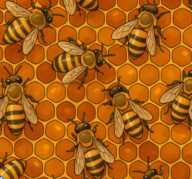

Relações ecológicas são as interações entre os seres vivos dentro de um
ecossistema e podem ocorrer entre indivíduos da mesma espécie (intraespecíficas) ou de espécies diferentes (interespecíficas).
Essas relações são fundamentais para a manutenção do equilíbrio ecológico
e podem ser classificadas em harmônicas (ou positivas) e desarmônicas (ou negativas), dependendo de os organismos envolvidos serem beneficiados, prejudicados ou neutros.


ASSISTA A UMA VÍDEO AULA:
video aula